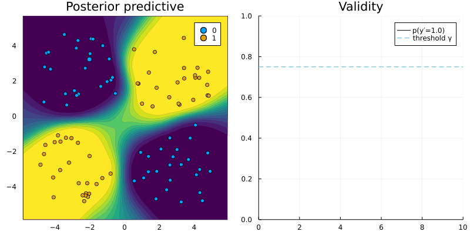

Interoperability
The Julia language offers unique support for programming language interoperability. For example, calling Python and R is made remarkably easy through PyCall.jl and RCall.jl. In this tutorial we will see how CounterfactualExplanations.jl leverages this functionality. In particular, we will see that through minimal extra effort the package can be used to explain models that were developed in train in Python or R.
using Random
# Some random data:
Random.seed!(1234);
N = 100
using CounterfactualExplanations
using CounterfactualExplanations.Data
x, y = toy_data_non_linear(N)
X = hcat(x...)torch model trained in R
The code below builds a simple MLP in R:
using RCall
R"""
# Data
library(torch)
X <- torch_tensor(t($X))
y <- torch_tensor($y)
# Model:
mlp <- nn_module(
initialize = function() {
self$layer1 <- nn_linear(2, 32)
self$layer2 <- nn_linear(32, 1)
},
forward = function(input) {
input <- self$layer1(input)
input <- nnf_sigmoid(input)
input <- self$layer2(input)
input
}
)
model <- mlp()
optimizer <- optim_adam(model$parameters, lr = 0.1)
loss_fun <- nnf_binary_cross_entropy_with_logits
"""The following code trains the MLP for the binary prediction task at hand:
R"""
for (epoch in 1:100) {
model$train()
train_losses <- c()
optimizer$zero_grad()
output <- model(X)
loss <- loss_fun(output[,1], y)
loss$backward()
optimizer$step()
train_losses <- c(train_losses, loss$item())
cat(sprintf("Loss at epoch %d: %3f\n", epoch, mean(train_losses)))
}
"""Making the model compatible
As always we need to extend the logits and probs functions to make the model compatible with CounterfactualExplanations.jl. As evident from the code below, this is actually quite straight-forward: the logits are returned by the torch model and copied form R into the Julia environment. Probabilities are then computed in Julia, by passing the logits through the sigmoid function.
using Flux
using CounterfactualExplanations, CounterfactualExplanations.Models
import CounterfactualExplanations.Models: logits, probs # import functions in order to extend
# Step 1)
struct TorchNetwork <: Models.FittedModel
nn::Any
end
# Step 2)
function logits(𝑴::TorchNetwork, X::AbstractArray)
nn = 𝑴.nn
ŷ = rcopy(R"as_array($nn(torch_tensor(t($X))))")
ŷ = isa(ŷ, AbstractArray) ? ŷ : [ŷ]
return ŷ
end
probs(𝑴::TorchNetwork, X::AbstractArray)= σ.(logits(𝑴, X))
𝑴 = TorchNetwork(R"model")Adapting the generator
Next we need to do a tiny bit of work on the Generator side. By default methods underlying the GenericGenerator are desiged to work with models that have gradient access through Zygote.jl, one of Julia’s main autodifferentiation packages. Of course, Zygote.jl cannot access the gradients of our torch model, so we need to adapt the code slightly. Fortunately, it turns out that all we need to do is extend the function that computes the gradient with respect to the loss function for the generic counterfactual search: ∂ℓ(generator::GenericGenerator, x̲, 𝑴, t). In particular, we will extend the function by a method that is specific to the TorchNetwork type we defined above. The code below implements this: our new method ∂ℓ calls R in order to use torch’s autodifferentiation functionality for computing the gradient.
import CounterfactualExplanations.Generators: ∂ℓ
using LinearAlgebra
# Countefactual loss:
function ∂ℓ(generator::GenericGenerator, x̲, 𝑴::TorchNetwork, t)
nn = 𝑴.nn
R"""
x <- torch_tensor($x̲, requires_grad=TRUE)
output <- $nn(x)
obj_loss <- nnf_binary_cross_entropy_with_logits(output,$t)
obj_loss$backward()
"""
grad = rcopy(R"as_array(x$grad)")
return grad
endGenerating counterfactuals
From here on onwards we use the CounterfactualExplanations.jl functionality as always. Below we choose a random sample, define our generic generator and finally run the search:
# Randomly selected factual:
Random.seed!(123)
x̅ = x[rand(1:length(x))]
y̅ = round(probs(𝑴, x̅)[1])
target = ifelse(y̅==1.0,0.0,1.0) # opposite label as target
γ = 0.75 # desired level of confidence
# Define Generator:
generator = GenericGenerator(0.5,0.1,1e-5,:logitbinarycrossentropy,nothing)
# Generate recourse:
counterfactual = generate_counterfactual(generator, x̅, 𝑴, target, γ)The code below just generates the animation that shows the counterfactual path.
include("docs/src/utils.jl")
using Plots
T = size(counterfactual.path)[1]
X_path = reduce(hcat,counterfactual.path)
yÌ‚ = CounterfactualExplanations.target_probs(probs(counterfactual.𝑴, X_path)',target)
p1 = plot_contour(X',y,𝑴;clegend=false, title="Posterior predictive - Plugin")
# [scatter!(p1, [counterfactual.path[t][1]], [counterfactual.path[t][2]], ms=5, color=Int(y̅), label="") for t in 1:T]
# p1
anim = @animate for t in 1:T
scatter!(p1, [counterfactual.path[t][1]], [counterfactual.path[t][2]], ms=5, color=Int(y̅), label="")
p2 = plot(1:t, ŷ[1:t], xlim=(0,T), ylim=(0, 1), label="p(y̲=" * string(target) * ")", title="Validity", lc=:black)
Plots.abline!(p2,0,γ,label="threshold γ", ls=:dash) # decision boundary
plot(p1,p2,size=(800,400))
end
gif(anim, "docs/src/tutorials/www/interop_r.gif", fps=5)